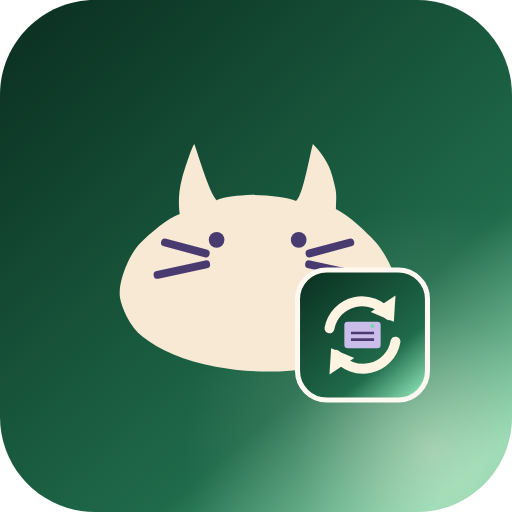
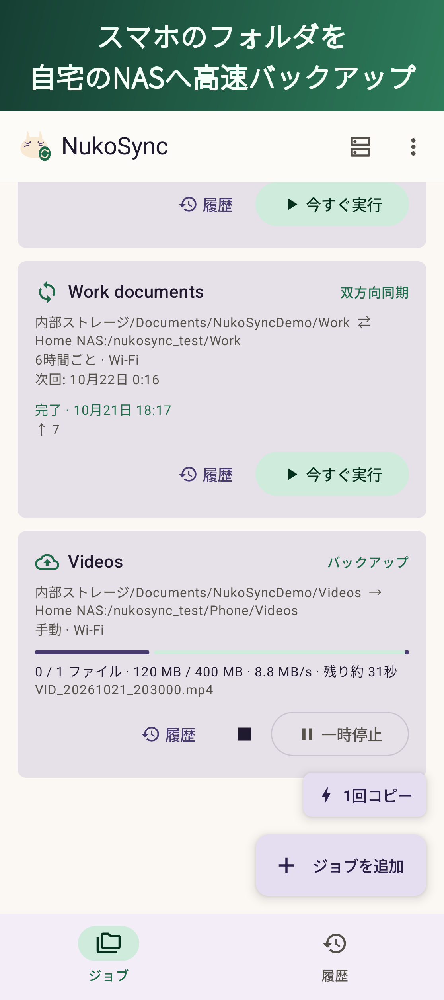
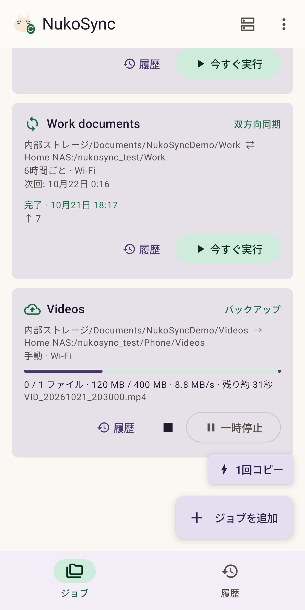
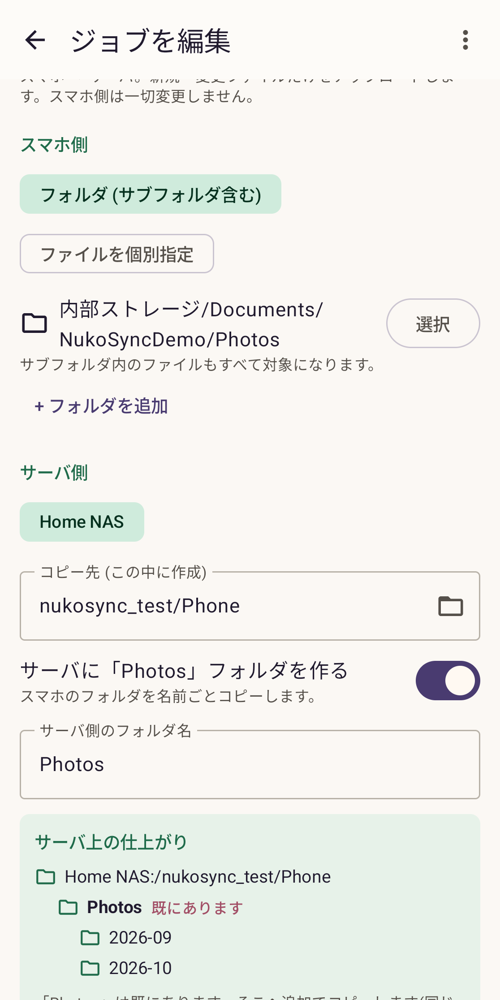
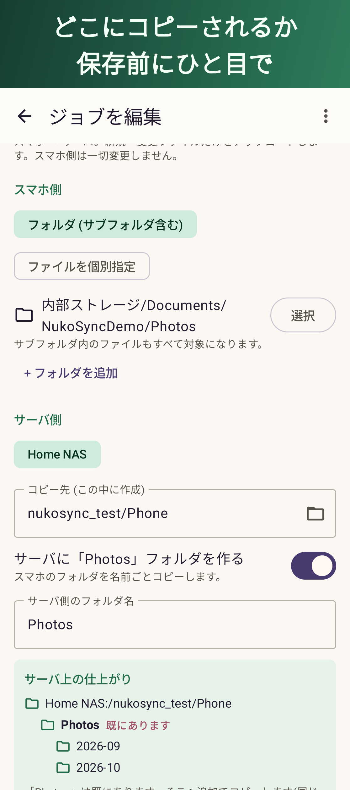
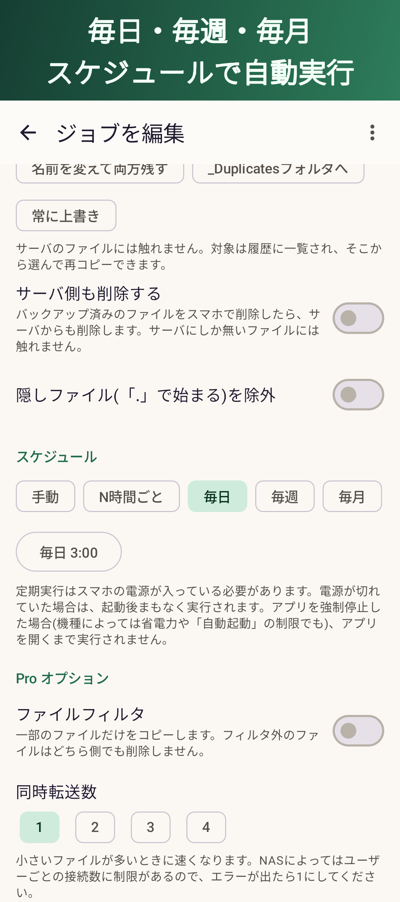
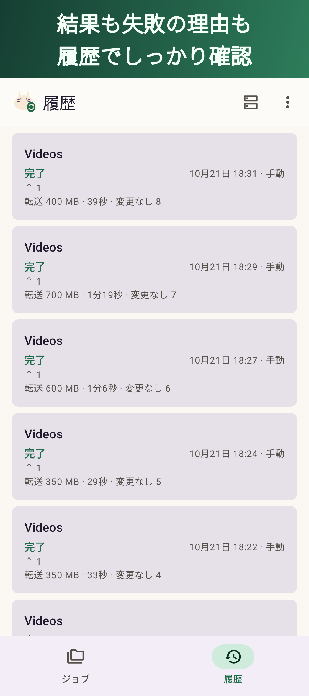
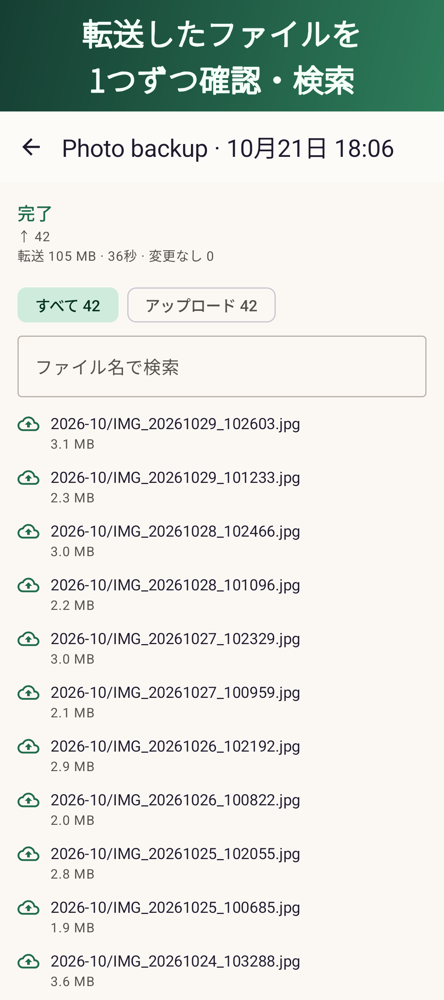

NukoSyncスマホのフォルダを、自宅のNASへ
ファイルマネージャーでのコピーが遅い、途中で止まってどこまで進んだか分からない、毎回フォルダ全体をコピーし直している——そんな悩みを解消するバックアップ・同期アプリです。変更されたファイルだけを高速にコピーし、途中で切れても続きから再開します。

ジョブごとにコピー元とコピー先を固定。どこに入るかは保存前に分かります。


速く、確実に、取り違えずに。
新しいファイルと変更されたファイルだけをコピー。大きな単位で転送するので、Wi-Fiでも速い。
Wi-Fiが切れても、Androidに止められても、次の実行で続きから。中途半端なファイルは残りません。
通知とアプリに、ファイル数・転送量・速度・残り時間を表示。一時停止と再開もボタンひとつ。
フォルダごとコピーか中身だけか、新しいフォルダか既存のフォルダかを、保存前にプレビュー。
N時間ごと・毎日・毎週・毎月。Wi-Fiのときだけ、充電中だけも選べます。外出先では無駄に再試行しません。
ファイルごとの結果と、サーバーが見つからない・通信が切れた・容量不足などの理由を表示。




家庭用NAS、Windowsの共有フォルダ、Raspberry Piなど。
バックアップの基本機能はすべて無料。もっと使いこなしたい方にProを用意しています。
ファイルは、あなたのスマホとあなたのサーバーの間だけ。